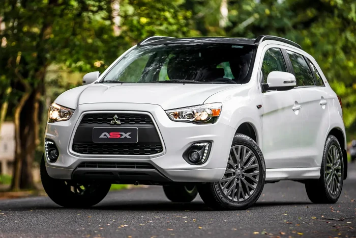
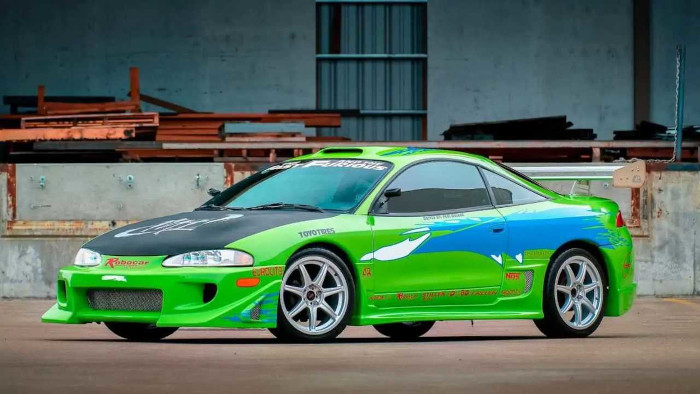

MITSUBISHI FUNDAÇÃO
Fundado por Yatarō Iwasaki em 1870, o Mitsubishi Group tem suas origens no zaibatsu Mitsubishi, uma empresa unificada que existiu de 1870 a 1946. A empresa, junto com outros grandes zaibatsu (Mitsui, Sumitomo e Yasuda), foram dissolvidas durante a ocupação do Japão após a Segunda Guerra Mundial, por ordem dos Aliados. Apesar da dissolução, as empresas que antes faziam parte da empresa unificada continuam a compartilhar a marca e o logotipo Mitsubishi. Saiba mais em https://pt.wikipedia.org/wiki/Mitsubishi
MITSUBISHI 3000 GT

O Mitsubishi 3000GT (Mitsubishi GTO no Japão e Dodge Stealth nos Estados Unidos) é um automóvel desportivo da Mitsubishi Motors. O seu lançamento ocorreu em 1990. O nome foi retirado do famoso Galant GTO e foi vísivel que as expectativas da Mitsubishi foram altas. Este carro recebeu muitos mecanismos que foram pensados para ele. O chassis foi desenvolvido tendo o controlo integral às quatro rodas. Esse carro inclui 4X4, direção. Tem também um spoiler e um sistema de escape que controla o som do escape.
MITSUBISHI ASX
O Mitsubishi ASX, também chamado de Mitsubishi RVR, é um utilitário esportivo compacto da Mitsubishi Motors. Em abril de 2010 a Mitsubishi anunciou que cederia a plataforma do ASX para o desenvolvimento de modelos pela Peugeot e a Citroën.
MITSUBISHI ECLIPSE CROSS

O Mitsubishi Eclipse Cross é um utilitário esportivo crossover de porte médio produzido pela Mitsubishi Motors desde 2017. A versão de produção foi apresentada no Salão Internacional do Automóvel de Genebra em março de 2017. Atualmente o veículo é fabricado no Japão.
MITSUBISHI ECLIPSE
O esportivo Mitsubishi Eclipse foi fabricado pela Mitsubishi, Plymouth e a Chrysler, que desenvolveram em conjunto. Para esse efeito, em 1985 a empresa Diamond Star Motors foi fundada. De acordo com a Mitsubishi Motors, o Eclipse foi batizado em homenagem a um cavalo de corrida inglês do século XVIII que havia vencido 26 corridas consecutivas. O Eclipse foi vendido oficialmente no Japão, América do Norte, Oriente Médio, Coreia do Sul, Filipinas, Brasil e China. No final de agosto de 2011, o Eclipse final saiu da linha de montagem e foi leiloado, com os rendimentos doados para instituições de caridade. Ficou muito conhecido no longa metragem Velozes e Furiosos, pois foi o primeiro carro utilizado pelo protagonista Brian O'Conner, interpretado pelo ator Paul Walker. Também foi utilizado um Eclipse Spyder de 3ª Geração no segundo filme da franquia, pelo personagem Roman Pierce.
MITSUBISHI GALANT VR-4

O nome Galant já foi utilizado para um modelo compacto da Mitsubishi Motors e atualmente é utilizado em um modelo de porte médio-grande. Em 1987, o sexto modelo que adota o mais alto, o estilo de mistura com um sedan desportivo, esta geração foi um dos primeiros a incorporar a tecnologia de injeção de combustível multiponto, freios ABS 4 rodas motrizes e um potente motor 2.0 litro DOHC de 16 válvulas, além de grande conforto, bancos de couro, vidros elétricos e muito mais. Esta geração ganhou o Carro do Ano no Japão em 1987 e tornou-se o modelo GS Motor Trend e começaram a ser importado no ano de 1989. As vendas deste Galant começou nos Estados Unidos em 1989, com a Sigma. Em 1991, a Mitsubishi Motors Company completou uma nova fábrica de montagem em Barcelona, Venezuela como Galant é um dos primeiros modelos produzidos. Foi vendido até 1994 sob os nomes ZX, MF, MS e MX, que foram identificados diferentes níveis de equipamentos e transmissão. A designação Sigma desapareceu com o modelo 1990. A modelo liftback hardtop foi adicionado em 1988, chamado de Mitsubishi Eterna. Esta geração também foi vendido no Canadá como o Dodge 2000GTX e 2000GTX Águia. Mas os leilões terminaram em 1992. Um modelo de edição limitada baseada GTi 16v foi introduzido em 1989, alterado pela empresa alemã AMG (de propriedade da Mercedes-Benz), com motor um pouco melhorado (172 cv) e kit de corpo único, rodas de liga leve e interior de couro.